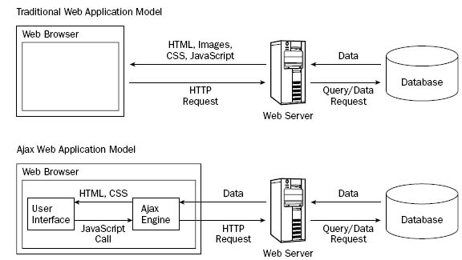

Mecanismo de JS para trabajar con la asincronía y hacer peticiones al servidor. Ajax fué creado por Microsoft para Outlook. XML fué el lenguaje de intercambio, ahora JSON o html plano.
Se dispone de tres métodos nativos para Ajax. ActiveXObject para IE8 e inferiores en estado obsoleto. XMLHttpRequest como contraparte para el resto de navegadores que no son IE. En los últimos años se tiene Fetch API como una forma moderna de hacer AJAX.
Se dispone de librerias externas para operar, tales como, jquery.ajax a la presente usado solo por mantenimiento Curso de jquery por jmircha, y la libreria muy popular basada en promesas - Axios muy usado en viewjs
Una petición de AJAX del objeto XMLHttpRequest puede tener uno de cuatro estados
- READY_STATE_UNINITIALIZED = 0; Estado de no inicialización
- READY_STATE_LOADING = 1; estado de cargando, enviando datos al servidor
- READY_STATE_LOADED = 2; estado de cargado, servidor respondio al cliente sin que cliente tenga la información lista recibida para interacción
- READY_STATE_INTERACTIVE = 3; motor de JS ya tiene acceso a los datos de la petición
- READY_STATE_COMPLETE = 4; Proceso terminado se tienen los datos listos del lado del cliente para operarlos mostrando la información
Códigos de estados de respuestas de http
Formato json adquirido desde github https://api.github.com/users/ing-l2v2 . Con la extensión JSON Formatter para Google se agrega el pluggin para formateo de archivos json JSON FORMATTER.